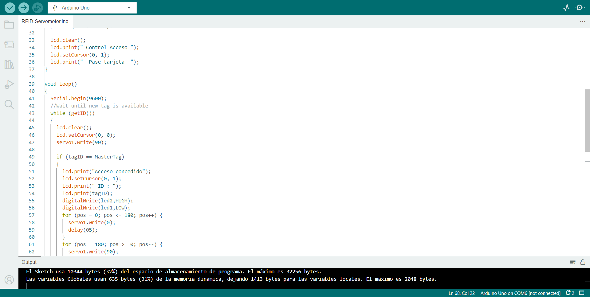
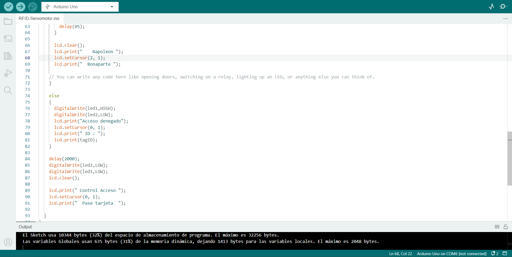
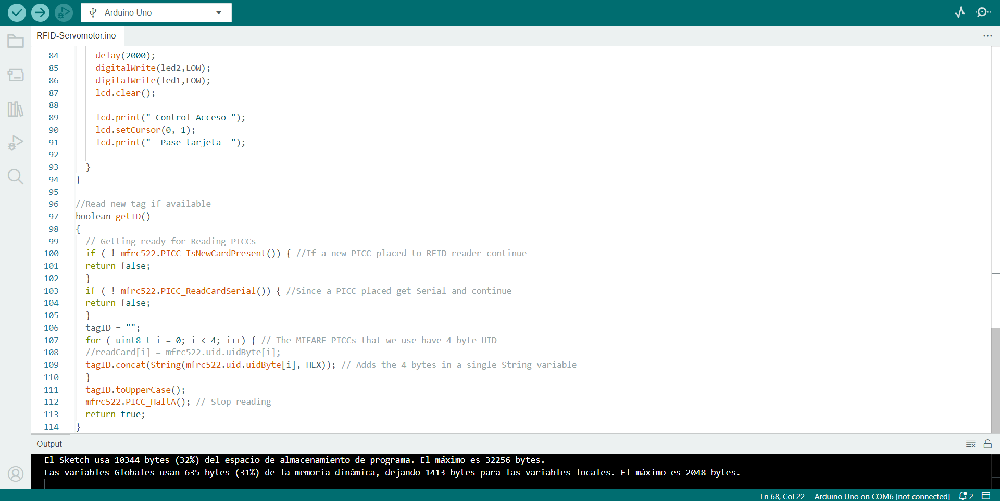
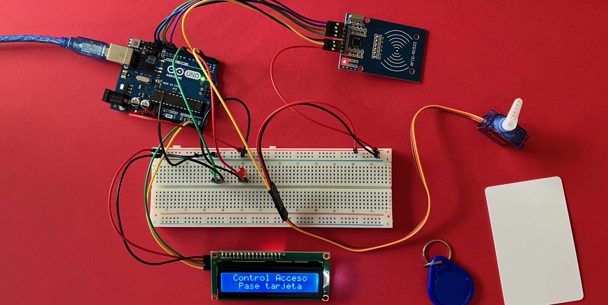

Código del proyecto RFID con Micro servomotor
Estructura básica del código
El esqueleto principal del lenguaje de programación en Arduino es bastante simple y se inicia con la declaración de librerías a usar, en este caso se tiene que considerar MFRC522, LiquidCrystal_I2C y Servo porque se va a utilizar un módulo lector RFID, una pantalla LCD 16x2 con un módulo de extensión I2C y un micro servomotor SG90 como componentes.
El código cuenta con dos variables en esta ventana: la primera se ubica a partir de la línea 7 y es int e indica la conexión de cada diodo LED en el Arduino mediante cables Dupont. En el caso de la línea 9 indica la posición inicial del micro servomotor. La segunda es byte y se ubica en la línea 14 donde su función principal es leer cada "llave" que pase por el módulo lector RFID de acuerdo a la información almacenada en el sistema. En la siguiente línea se registra la identificación de la "llave" que cuenta con el acceso permitido. Estas variables permiten almacenar un valor númerico para su uso posterior en el programa, en un término más sencillo sería reemplazar el punto físico que sería la conexión en el pin 6 por la palabra led2.
En la línea 22 inicia la función setup() que se invoca una sola vez cuando el programa inicia y es la parte encargada de recoger la configuración. En este caso se está utilizando para empezar los modos de trabajo de los pines, por ejemplo el micro servomotor está conectado en el pin 3 y se configura el pin como salida.
Loop()
Se coloca esta función luego de setup() y se ejecuta de forma cíclica o en bucle. En esta parte se ejecuta constantemente lectura de entradas y activación de entradas. En la línea 41 se determina el número de baudios con que se va a trabajar el código, en casi todos los proyectos se trabaja con 9600. Seguidamente, en la línea 43, se encuentra el bucle tipo while que es de ejecución continua mientras se cumpla la expresión colocada entre paréntesis, en este caso sería la lectura de la tarjeta o llave. Entre llaves se programa la labor de limpiar la pantalla, ubicar el texto de inicio en los ejes 0 (columna) y 0 (fila) y situar el ángulo del micro servomotor en 90°.
En la línea 49 se encuentra el estamento if que se emplea para probar si una determinada condición se llega a alcanzar. Un ejemplo de esta función podría ser el reconocimiento de una "llave" si está registrada en el sistema para poder accionar el sistema de apertura. Si la "llave" está registrada, aparece el mensaje Acceso concedido en la pantalla, se enciende el diodo #2 (verde) y el servomotor realiza un giro.
En la línea 55 la estructura digital digitalWrite y envía al pin definido, en este ejemplo sería el led2, como OUTPUT el valor de HIGH. En este caso el diodo verde (led2) se encenderá mientras que el rojo (led1) no.
En la línea 57 se aprecia la declaración for que se emplea para repetir un bloque de sentencias encerradas entre llaves un número determinado de veces. La declaración cuenta con tres partes separadas: la primera que muestra pos = 0 quiere decir que es la inicialización de la ejecución, se encuentra el ángulo en la posición 0 cuando se va activar; la segunda, pos <= 180, quiere decir que es la condición de la ejecución, el ángulo de giro puede llegar hasta 180; y la última, pos++, quiere decir que es la expresión de la ejecución, el giro se realizará hacia el lado derecho del origen.
else
Es otro estamento que se refiere a una respuesta al estamento if si es que hay otra opción de ejecución. En este caso sería si una "llave" no registrada pasa por el lector RFID, como se ve en el código, saldrá Acceso denegado , se prenderá el diodo #1 (rojo) y el micro servomotor no ejecturá ningún movimiento. Es importante mencionar que este estamento puede ir precedido de otra condición de manera que se pueden establecer varias estructuras condicionales siempre y cuando sean mutuamente excluyentes y se puedan ejecutar a la vez.
Elementos importantes
En la línea 96 podemos observar una línea de comentarios que se inicia con // y se finaliza con la siguiente línea de código. Estas dos líneas son ignoradas por el programa y no ocupan espacio en la memoria. Se utiliza bastante después de una instrucción, como se aprecia en la línea 100, para brindar mayor información acerca de lo que significa cada línea.
La línea 98 es iniciada con una { (llave) que sirve para definir el principio y el final de un bloque de instrucciones. Es necesario que haya dos llaves porque sino el programa botará error y no se podrá validar el código. Igual el mismo programa facilita al usuario remarcando en color rojo la llave que se encuntre si es que faltara una llave.
El ; (punto y coma) se emplea para disgregar instrucciones en el lenguaje de programación en Arduino. También se puede utilizar para separar elementos en una instrucción de tipo for como se visualiza en la línea 108. Igualmente que el anterior elemento, es necesario colocar esto porque sino el programa botará diversos errores en su validación.
